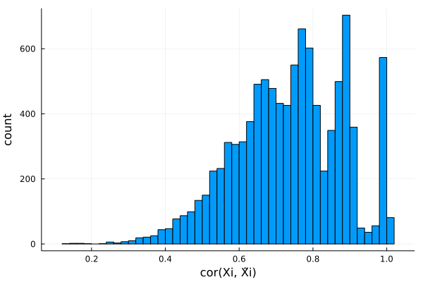

fastPHASE HMM knockoffs
This is a tutorial for generating (fastPHASE) HMM knockoffs for genome-wide association studies. This kind of knockoffs is suitable for data without population admixture or cryptic relatedness. The methodology is described in the following paper:
Sesia, Matteo, Chiara Sabatti, and Emmanuel J. Candès. "Gene hunting with hidden Markov model knockoffs." Biometrika 106.1 (2019): 1-18.
If your samples have diverse ancestries and/or extensive relatedness, we recommend those samples to be filtered out, or use SHAPEIT-HMM knockoffs.
# first load packages needed for this tutorial
using Revise
using SnpArrays
using Knockoffs
using Statistics
using Plots
using GLMNet
using Distributions
using Random
gr(fmt=:png);Step 0: Prepare example data
To illustrate we need example PLINK data, which are available in Knockoffs.jl/data
test.(bed/bim/fam)are simulated genotypes without missingsmouse.imputed.(bed/bim/fam)are real genotypes without missing
# Path to PLINK data
data_path = joinpath(normpath(Knockoffs.datadir()), "test")"/Users/biona001/.julia/dev/Knockoffs/data/test"Step 1: Generate Knockoffs
Knockoffs are made using the wrapper function hmm_knockoff. This function does 3 steps sequentially:
- Run fastPHASE on $\mathbf{X}_{n\times p}$ to estimate $\alpha, \theta, r$ (this step takes 5-10 min for the example data)
- Fit and generate knockoff copies of the HMM
- Store knockoffs $\tilde{\mathbf{X}}_{n\times p}$ in binary PLINK format (by default under a new directory called
knockoffs) and return it as aSnpArray
@time X̃ = hmm_knockoff(data_path, plink_outfile="test.fastphase.knockoffs")seed = 1652154851
This is fastPHASE 1.4.8
Copyright 2005-2006. University of Washington. All rights reserved.
Written by Paul Scheet, with algorithm developed by Paul Scheet and
Matthew Stephens in the Department of Statistics at the University of
Washington. Please contact pscheet@alum.wustl.edu for questions, or to
obtain the software visit
http://stephenslab.uchicago.edu/software.html
Total proportion of missing genotypes: 0.000000
1000 diploids below missingness threshold, 0 haplotypes
data read successfully
1000 diploid individuals, 10000 loci
K selected (by user): 12
seed: 1
no. EM starts: 1
EM iterations: 10
no. haps from posterior: 0
NOT using subpopulation labels
this is random start no. 1 of 1 for the EM...
seed for this start: 1
-12448937.79229315
-9445075.64492578
-8349084.94704032
-7261896.43613014
-6281741.47324536
-5576823.19655063
-5155151.87406101
-4928193.53344398
-4802495.92350104
-4725979.88580363
final loglikelihood: -4676003.575106
iterations: 10
writing parameter estimates to disk
simulating 0 haplotype configurations for each individual... done.
[32mProgress: 100%|█████████████████████████████████████████| Time: 0:02:45[39m
simulating 0 haplotypes from model: knockoffs/tmp1_hapsfrommodel.out
554.600068 seconds (124.71 M allocations: 6.023 GiB, 0.35% gc time, 4.53% compilation time)
1000×10000 SnpArray:
0x00 0x00 0x02 0x03 0x02 0x02 … 0x03 0x03 0x03 0x02 0x03 0x02
0x00 0x02 0x03 0x03 0x02 0x00 0x02 0x02 0x02 0x00 0x00 0x02
0x00 0x00 0x02 0x03 0x02 0x02 0x03 0x03 0x00 0x00 0x02 0x02
0x00 0x00 0x00 0x00 0x00 0x02 0x02 0x02 0x02 0x02 0x00 0x00
0x00 0x00 0x02 0x02 0x02 0x02 0x02 0x00 0x00 0x00 0x03 0x03
0x00 0x00 0x03 0x03 0x02 0x02 … 0x03 0x03 0x02 0x02 0x02 0x00
0x00 0x00 0x03 0x03 0x00 0x03 0x03 0x00 0x02 0x02 0x03 0x03
0x02 0x02 0x03 0x02 0x00 0x02 0x03 0x03 0x02 0x00 0x02 0x02
0x02 0x00 0x02 0x02 0x00 0x02 0x03 0x03 0x02 0x02 0x00 0x03
0x00 0x03 0x02 0x03 0x03 0x02 0x03 0x03 0x03 0x00 0x00 0x02
0x00 0x02 0x02 0x03 0x03 0x02 … 0x03 0x03 0x03 0x03 0x00 0x02
0x02 0x02 0x02 0x02 0x00 0x00 0x02 0x02 0x02 0x00 0x02 0x00
0x00 0x00 0x03 0x03 0x02 0x02 0x02 0x02 0x02 0x00 0x00 0x00
⋮ ⋮ ⋱ ⋮
0x00 0x00 0x03 0x02 0x02 0x00 0x03 0x03 0x03 0x02 0x02 0x00
0x00 0x02 0x02 0x03 0x03 0x03 0x03 0x02 0x03 0x02 0x03 0x03
0x02 0x02 0x03 0x03 0x03 0x02 … 0x03 0x00 0x00 0x00 0x03 0x03
0x00 0x00 0x02 0x03 0x03 0x02 0x03 0x02 0x02 0x02 0x03 0x03
0x02 0x00 0x00 0x00 0x02 0x02 0x02 0x00 0x00 0x00 0x03 0x03
0x00 0x00 0x02 0x02 0x02 0x03 0x02 0x03 0x02 0x02 0x02 0x02
0x03 0x03 0x03 0x03 0x02 0x00 0x03 0x02 0x03 0x03 0x03 0x02
0x00 0x00 0x02 0x02 0x02 0x00 … 0x03 0x02 0x02 0x00 0x02 0x03
0x02 0x02 0x02 0x02 0x00 0x00 0x03 0x03 0x03 0x02 0x00 0x03
0x00 0x02 0x02 0x02 0x02 0x02 0x03 0x03 0x02 0x02 0x02 0x02
0x02 0x02 0x02 0x02 0x02 0x02 0x03 0x02 0x02 0x00 0x02 0x02
0x02 0x02 0x02 0x02 0x02 0x02 0x03 0x03 0x02 0x02 0x03 0x02Optional parameters
Here are some optional parameters one can tune when fitting the HMM procedure.
K: Number of haplotype clusters. Defaults to 12C: Number of EM iterations before convergence. Defaults to 10.n: Number of samples used to fit HMM in fastPHASE. Defaults to using all samples
They can be specified via:
@time X̃ = hmm_knockoff(
data_file,
plink_outfile="test.fastphase.knockoffs",
K = 12,
C = 10,
n = 100)Step 2: Examine knockoff statistics
Lets check if the knockoffs "make sense". We will use SnpArrays.jl to import the original and knockoff genotypes, and compare summary statistics using built-in functions comparepairwisecorrelation and compare_correlation
# import original and knockoff genotypes
X = SnpArray(data_path * ".bed")
X̃ = SnpArray("knockoffs/test.fastphase.knockoffs.bed")
n, p = size(X̃)(1000, 10000)Lets compare $cor(X_i, X_j)$ and $cor(X_i, \tilde{X}_j)$. If knockoffs satisfy exchangability, their correlation should be very similar and form a diagonal line.
# look at only pairwise correlation between first 200 snps
r1, r2 = compare_pairwise_correlation(X, X̃, snps=200)
# make plot
scatter(r1, r2, xlabel = "cor(Xi, Xj)", ylabel="cor(Xi, X̃j)", legend=false)
Plots.abline!(1, 0, line=:dash)Plots distribution of $cor(X_j, \tilde{X}_j)$ for all $j$. Ideally, we want $cor(X_j, \tilde{X}_j)$ to be small in magnitude (i.e. $X$ and $\tilde{X}$ is very different). Here the knockoffs are tightly correlated with the original genotypes, so they will likely have low power.
r2 = compare_correlation(X, X̃)
histogram(r2, legend=false, xlabel="cor(Xi, X̃i)", ylabel="count")
LASSO example
Let us apply the generated knockoffs to the model selection problem
Given response $\mathbf{y}_{n \times 1}$, design matrix $\mathbf{X}_{n \times p}$, we want to select a subset $S \subset \{1,...,p\}$ of variables that are truly causal for $\mathbf{y}$.
Simulate data
We will simulate
\[\mathbf{y}_{n \times 1} \sim N(\mathbf{X}_{n \times p}\mathbf{\beta}_{p \times 1} \ , \ \mathbf{\epsilon}_{n \times 1}), \quad \epsilon_i \sim N(0, 1)\]
where $k=50$ positions of $\mathbf{\beta}$ is non-zero with effect size $\beta_j \sim N(0, 1)$. The goal is to recover those 50 positions using LASSO.
# set seed for reproducibility
Random.seed!(1111)
# simulate true beta
n, p = size(X)
k = 50
βtrue = zeros(p)
βtrue[1:k] .= randn(k)
shuffle!(βtrue)
# find true causal variables
correct_position = findall(!iszero, βtrue)
# simulate y
y = X * βtrue + randn(n)1000-element Vector{Float64}:
-7.523748950079584
-5.870529819964483
-0.5742132199848955
2.1309132557501718
-1.6879497296254022
6.303519372510508
-5.802636275728736
4.326923276536526
-1.0412802760571847
-8.041827059609703
5.499043516471697
-7.052572319910739
-0.7269822409994189
⋮
-8.64616507915174
9.75520485123946
-4.741610543782101
0.19476116174706148
-6.907628164727042
4.074654461857484
-0.8816816975311048
-4.477392544345892
-0.9657429191845255
-2.6017256381373777
3.599329780486735
-8.028131783786595Standard LASSO
Lets try running standard LASSO, which will produce $\hat{\mathbf{\beta}}_{p \times 1}$ where we typically declare SNP $j$ to be selected if $\hat{\beta}_j \ne 0$. We use LASSO solver in GLMNet.jl package, which is just a Julia wrapper for the GLMnet Fortran code.
How well does LASSO perform in terms of power and FDR?
# run 10-fold cross validation to find best λ minimizing MSE
lasso_cv = glmnetcv(X, y)
λbest = lasso_cv.lambda[argmin(lasso_cv.meanloss)]
# use λbest to fit LASSO on full data
βlasso = glmnet(X, y, lambda=[λbest]).betas[:, 1]
# check power and false discovery rate
power = length(findall(!iszero, βlasso) ∩ correct_position) / k
FDR = length(setdiff(findall(!iszero, βlasso), correct_position)) / count(!iszero, βlasso)
#summarize
count(!iszero, βlasso), power, FDR(348, 0.9, 0.8706896551724138)Observe that
- LASSO found a total of 348 SNPs
- LASSO found $90$% of all true predictors
- False discovery rate is 87%, meaning that 303/348 discovered predictors are false positives.
Knockoff+LASSO
Now lets try applying the knockoff methodology. Recall that consists of a few steps
- Run LASSO on $[\mathbf{X} \mathbf{\tilde{X}}]$
- Compare feature importance score $W_j = \text{score}(x_j) - \text{score}(\tilde{x}_j)$ for each $j = 1,...,p$. Here we use $W_j = |\beta_j| - |\tilde{\beta}_{j}|$
- Choose target FDR $0 \le q \le 1$ and compute
\[\tau = min_{t}\left\{t > 0: \frac{{\#j: W_j ≤ -t}}{{\#j: W_j ≥ t}} \le q\right\}\]
In step 1, $[\mathbf{X} \mathbf{\tilde{X}}]$ is written for notational convenience. In practice one must interleave knockoffs with the original variables, where either the knockoff come first or the original genotype come first with equal probability. This is due to the inherent bias of LASSO solvers: when the original and knockoff variable are equally valid, the one listed first will be selected.
# interleave knockoffs with originals
Xfull, original, knockoff = merge_knockoffs_with_original(data_path,
"knockoffs/test.fastphase.knockoffs",
des="knockoffs/merged")
Xfull = convert(Matrix{Float64}, Xfull, center=true, scale=true)
# step 1
knockoff_cv = glmnetcv(Xfull, y) # cross validation step
λbest = knockoff_cv.lambda[argmin(knockoff_cv.meanloss)] # find lambda that minimizes MSE
βestim = glmnet(Xfull, y, lambda=[λbest]).betas[:, 1] # refit lasso with best lambda
# target FDR is 0.05, 0.1, ..., 0.5
FDR = collect(0.05:0.05:0.5)
empirical_power = Float64[]
empirical_fdr = Float64[]
for fdr in FDR
βknockoff = extract_beta(βestim, fdr, original, knockoff) # steps 2-3 happen here
# compute power and false discovery proportion
power = length(findall(!iszero, βknockoff) ∩ correct_position) / k
fdp = length(setdiff(findall(!iszero, βknockoff), correct_position)) / max(count(!iszero, βknockoff), 1)
push!(empirical_power, power)
push!(empirical_fdr, fdp)
end
# visualize FDR and power
power_plot = plot(FDR, empirical_power, xlabel="Target FDR", ylabel="Empirical power", legend=false)
fdr_plot = plot(FDR, empirical_fdr, xlabel="Target FDR", ylabel="Empirical FDR", legend=false)
Plots.abline!(fdr_plot, 1, 0, line=:dash)
plot(power_plot, fdr_plot)
Observe that
- LASSO + knockoffs controls the false discovery rate at approximately the target (dashed line). If we repeat the simulation multiple times, the empirical FDR should average out to be slightly below the target level.
- The power of LASSO + knockoffs is lower than standard LASSO